Documentation
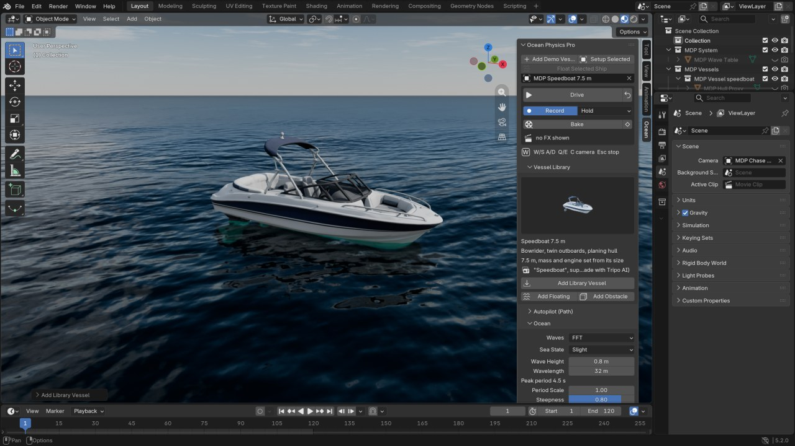
Drive your own boat, RIB, jetski or ship with the keyboard across a large real-time ocean. The vessel cuts through waves, jumps off crests, slams back into the water and leaves wakes, lasting foam, prop wash and spray. Record the drive and bake it, then play it back and render it like any other animation.
Requires Blender 5.2 or newer. Supports EEVEE and Cycles.
1. Install
- Edit > Preferences > Get Extensions > Install from Disk... and pick
ocean_physics_pro-1.13.4.zip. - In the 3D Viewport, press N to open the sidebar. The add-on is in the Ocean tab.
2. Quick start (2 minutes)
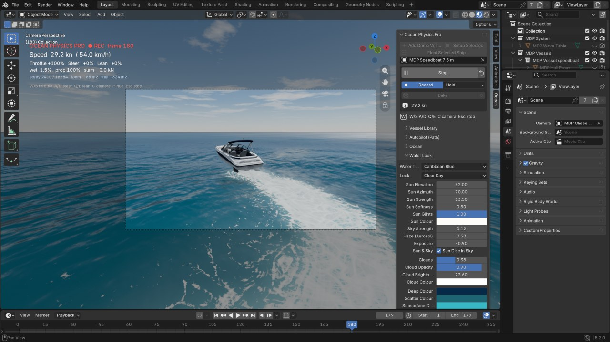
- Ocean > Create Demo Ocean. Pick a vessel preset in the redo panel (Speedboat by default). This creates the ocean, the sky, a demo vessel and a chase camera. For a beach instead of open sea, use Create Coast Scene (section 7). Or pick a realistic vessel in Vessel Library and click Add Library Vessel (section 3a): it creates the ocean too.
- Switch the viewport to Material Preview. For the real sky in the preview, enable Scene World in the shading popover.
- Click Drive with the mouse over the viewport, then:
| Key | Action |
|---|---|
| W / Up | throttle |
| S / Down | reverse / brake |
| A / Left, D / Right | steer |
| Q / E | rider lean (jetski) |
| C | chase camera / free camera |
| H | HUD on/off |
| Esc | stop |
- With Record on (default), the drive is stored as keyframes. With Bake FX After Recording on (default), the wake, foam and spray are baked automatically when you stop.
- Press Play. The recorded take plays back without the keyboard or the Drive operator. Render it with F12 or Ctrl+F12.
3. Use your own model
Any vessel model can be driven: an FBX, glTF or OBJ import, a model made with an AI generator, a kit-bashed boat. It may be at any scale and heading, in one piece or many.
- Select the whole model (all its parts).
- Click Setup Selected. The dialog shows the size it measured. If the model is far from a real vessel's size (about 1 unit long, or in centimetres), it proposes a real length: check Real Length and change it if needed.
- Confirm. Everything below is automatic (each value can be changed in the dialog):
- Bow Direction: Automatic finds the long axis of the lower hull, then the bow. The bow is the end that is narrower at the waterline and at its very tip (a stem, not a transom), whose bottom rises (forefoot). On a sailing rig, the mast stands forward of the middle. A double-ended hull (a Viking ship, a canoe) has no clear bow: the dialog then says so. If it drives astern, pick the axis.
- Vessel Type: Automatic picks from the length and the bottom rake. Under 5 m it is a RIB. From 5 to 15 m it is a Speedboat if the bottom rises at the bow, otherwise a Fishing/work boat. From 15 to 40 m it is a work boat, and above 40 m a Large Ship.
- Realistic Mass and Engine puts the waterline where a real vessel of that type floats. The draft is a fraction of the beam, and at most 60 % of the hull depth from keel to deck edge, so 40 % stays dry and a low aft deck does not take the sea. Planing craft are no heavier than real ones of their length and beam. Engine, rudder and rates scale with the size (Froude scaling).
- Find the Hull uses the largest mesh as the hull.
- Hull Proxy: Hull Body builds the physics body from the hull below the deck edge. Masts, sails, cabins, rails, towers and outboard legs are left out, and fins and skegs are flattened to the hull bottom. A catamaran's two hulls stay two bodies, and the bridge deck stays clear of the water. A planing monohull (speedboat, RIB, jetski type) drives on a Type Hull: a tuned planing hull of the model's length and beam, in the same place. Models rarely have a bottom that planes cleanly, so this hull stands in for it. Convex Hull (one hull around everything) and Closed Mesh (exact, needs a watertight hull) are still available.
- The add-on creates an MDP Rig empty. Your parts are parented to it and the vessel sits on its design waterline. Physics moves only the rig. Your mesh is never edited and never read during the simulation.
- Fine-tune in the Vessel and Physics panels if you like: CoG Height, LCG Shift and CoG Offset trim the boat, and Hull Source + Rebuild Hull choose another proxy mesh.
A Blender Rigid Body on the selected objects is removed during setup, so two physics systems never drive the same object.
Every drive and every take starts with the vessel on the waves (v1.6): at its waterline on the local water surface, tilted with it. Before 1.6 it started at its calm-water height wherever the waves were, so it plunged at the start (a low aft deck went under).
Float your own ship
Float Selected Ship (Ocean panel, and Floating Objects & Collisions) puts a model on the water as a moored ship: it floats, rolls and drifts with the waves, and the driven vessel collides with it and pushes it. It can also be a fixed Obstacle. Use it for a harbour full of boats, a ship to ram, or a wreck to steer around.
It analyses the model like Setup Selected (hull, bow, type, real length, Hull Body). It gives it the mass of a real vessel of that type and size, with ballast so it stands upright like one, and puts it on the water where it is. The hull body becomes the physics object (MDP <name> (floating), drawn as a wire) and your parts follow it. Rotate or move that object to place the ship.
3a. Vessel library
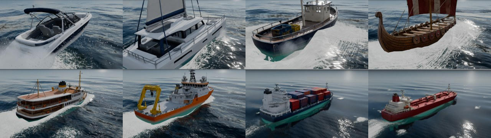
Nine vessels, ready to drive. They are 3D models generated with an AI tool, set up exactly the way Setup Selected sets up your own model: automatic hull body, bow, type and real waterline. The table shows the values the add-on gave them, measured in calm water: top speed at full throttle, time from rest to 90 % of it, and the steady turning radius with full rudder from top speed.
| Vessel | Type | Mass | Draft | Top speed | 90 % after | Full-rudder turn |
|---|---|---|---|---|---|---|
| Speedboat 7.5 m | planing | 2.6 t | 0.42 m | 51.5 kn | 10 s | 2.2 lengths at 27.1 kn |
| Inflatable Boat (RIB) 5.5 m | planing (RIB) | 0.6 t | 0.24 m | 36.5 kn | 8 s | 2.6 lengths at 19.8 kn |
| Sailing Catamaran 13 m | displacement, sails 100 m2 | 10.3 t | 0.44 m | 6.5 kn | 7 s | 2.3 lengths at 4.9 kn |
| Fishing Boat 12 m | displacement | 55.9 t | 1.77 m | 11.7 kn | 6 s | 2.4 lengths at 8.9 kn |
| Viking Longship 23 m | displacement, sails 90 m2 | 170 t | 2.49 m | 11.6 kn | 13 s | 1.5 lengths at 7.1 kn |
| Yacht Ship 50 m | ship | 1,022 t | 3.00 m | 9.4 kn | 45 s | 2.0 lengths at 6.8 kn |
| Research Vessel 60 m | ship | 3,084 t | 5.18 m | 10.0 kn | 48 s | 2.4 lengths at 7.9 kn |
| Container Ship 180 m | ship | 90,995 t | 16.25 m | 17.2 kn | 81 s | 1.6 lengths at 11.7 kn |
| Oil Tanker 230 m | ship | 173,307 t | 19.58 m | 19.1 kn | 89 s | 1.7 lengths at 13.6 kn |
Mass and engine come from the size and type, not from a real vessel's figures. The engines are tuned for driving, not real installed powers: big ships reach speed in about 1.5 minutes, much faster than real ones. The speeds of the longship and the catamaran above are in calm air (wind 3 m/s), mostly under oars or engines; with wind their sails add drive depending on the angle to it.
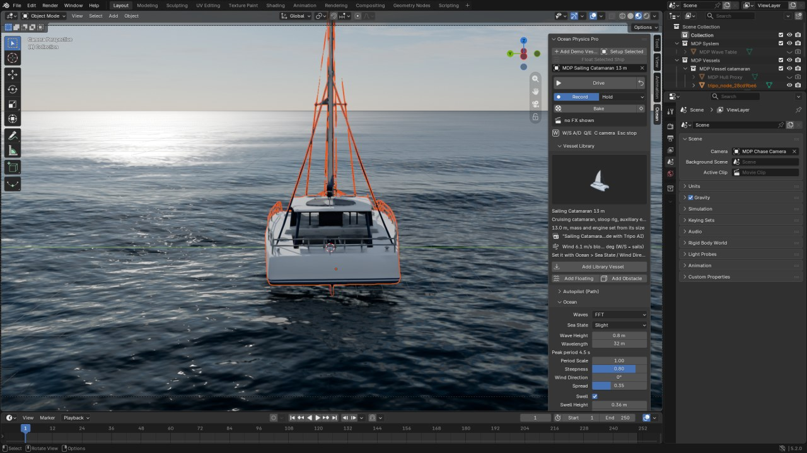
- Ocean > Vessel Library: click the big preview to pick a vessel, then Add Library Vessel. With no ocean in the scene, the ocean, sky and chase camera are created first.
- Replace Current Vessel (on by default) removes the vessel the add-on created before (demo or library vessel) and puts the new one in its place with the same heading. Your own models are never removed: the new vessel is then added at the 3D cursor and becomes the driven one.
- Drive as usual. Bake > Start Speed starts a take (or a drive) already under way: ahead along the bow, engine at full. The bake reproduces such a take exactly.
- The Vessel panel shows the library vessel's name. Reset puts the library values back after you have changed the physics.
- Add Floating / Add Obstacle put the selected library vessel at the 3D cursor as a moored ship that floats and drifts with the waves (the driven vessel collides with it and pushes it), or as a fixed obstacle. Its hull body is the physics object and the model's parts follow it. Turn it with that object before driving.
Every library vessel was checked by an automatic test. In calm water it must keep its waterline and float level. In a moderate sea at full throttle it must reach a speed of its type, never capsize, and keep the deck edge clear of the sea. Hard over, it must turn tighter than 3 lengths. As a moored copy, it must stay at its waterline and upright. All nine pass all nine checks.
Sailing
The Viking longship (90 m2 square sail, plus oars) and the sailing catamaran (100 m2 sloop rig, plus auxiliary engines) sail. W/S set and take in sail together with the engine (throttle), and A/D steer. The sails trim themselves for the most drive. The wind is the wind of the sea state: its speed comes from the wave height (Slight 6 m/s, Moderate 8.4 m/s, Rough 11 m/s), and it blows the way the waves travel (Ocean > Wind Direction). While driving, the HUD shows the wind, the apparent wind and its angle off the bow, and the sail set. The square sail cannot point closer than about 70 deg to the apparent wind; the sloop rig points to about 45 deg.
Any vessel can sail: the Physics > Sails values (sail area, centre of effort, lift and drag of the sails, closest angle to the wind) work for your own models too. The sail meshes of the model are not moved or reefed by the simulation; set and trim are physics only.
You may use the library models, changed or not, in your own renders, animations and games. You may not resell or redistribute them as models on their own. The code of the add-on is GPL-3.0-or-later.
4. Panels
Ocean: sea state preset, wave height (Hs), peak wavelength, period scale (the period is derived from deep-water dispersion and shown in the panel), steepness, wind direction, spread, number of waves, swell (height, length, direction), short chop, seed, and surface current (speed and direction). Surface Detail sets the LOD quality, the finest vertex spacing and the detail centre (vessel, camera or any object). The panel also shows whitecaps and the wake and foam strength.
Physics > Sails (v1.5): sail area (0 = no sails), centre of effort (along the hull and above the keel), maximum lift and profile drag of the sails, and the closest apparent wind angle at which they still draw.
Water Look: Water Type (one click for the whole sea, see section 6), one-click looks (Clear Day, Golden Hour, Tropical, Overcast, Storm, Coast) and their controls:
- Sun & sky: elevation, azimuth, strength, softness, sun glints (the sun's mirror reflection; 0 under full cloud), colour, sky strength, aerosol haze, exposure.
- Clouds: cover, opacity, brightness, colour.
- Water: deep, scatter and subsurface colour, subsurface strength, water glow (light scattered back out of the water), bubble and foam colour, Foam Streaks (how far foam left behind is drawn out along the trail), Aerated Water (the milky bubble cloud under the foam), Ocean Whitewater (light whitewater on the breaking crests of the open sea), Underwater Tint and Tint Depth (how things under the surface take the water colour).
- Surface: micro-wave strength and size, near/far roughness.
- Distance: horizon haze colour, distance and brightness.
- Screen-space reflections: the vessel is mirrored in the water.
- See-Through Water and Underwater Visibility (1 = fully, the default since 1.3.1): what is under the surface (hull, rocks, objects, the sea bed) shows through the water, tinted by depth.
- Lens FX: Off / Bloom / Bloom + Glints (star streaks on the sun glitter), strength, threshold, and Lens FX in Viewport (runs the compositor in the camera view).
Coast: on/off, shoaling depth, land height, water clarity, transparency, shallow colour, surf foam and width, caustics, rebuild (see section 7).
Vessel: preset, mass, centre of gravity, inertia, and the hull proxy (source, mode, rebuild, drop to waterline). It also shows proxy statistics: volume, maximum floatable mass, and probe and patch counts.
Floating Objects & Collisions: Make Floating / Make Collider on the selected meshes, Rebuild Proxy, Clear Physics, Add Floating Objects (demo crates, barrels, buoys, logs and a pier). For the active object: shape (convex hull or one hull per loose part), density or mass, buoyancy probes, ballast offset, water drag, turn drag, friction and bounce. Scene: on/off, Make Waves, Ride the Wake, Splash, solver iterations, and the hull friction and bounce of the vessel. See section 8.
Physics: engine (thrust, power, propulsive efficiency, reverse, throttle smoothing), steering (vectored thrust or rudder, angle, rate, foil area for an outboard lower unit or rudder, rider lean), propeller position, depth and diameter, hydrodynamics (pressure and suction drag, skin friction, keel grip, hump model), per-axis drag (forward, lateral, vertical), damping, slamming and its limit, arcade assists, own-wake feedback and physics rate.
Wake & Foam: wake solver grid and cell size, hull displacement strength, foam life and spread (near and trail), emission gains (bow/hull, prop wash, breaking crests, impact splash), the spray budget, rate and drop size, Mist (fine spray carried by the wind) and Crest Spray (spray thrown off the breaking crests of the wake at speed).
Camera: chase or free. Distance, height, look-ahead, smoothing, focal length and Record Camera.
Bake: record, auto bake, frame range extension, cache folder, Bake and Clear Cache.
Performance: Low / Medium / High budgets (ocean rings, wake grids, probes, spray), real-time catch-up, HUD, and the live statistics of the last drive.
5. Recording, time and baking
- One function advances the world by exactly one scene frame: the fixed-step physics (accumulator, capped sub-steps) plus the effects. Drive calls it from a timer. When the viewport is slow it simulates up to Max Frames / Tick frames per tick to stay real time. Bake calls it in a loop. The timeline never steps it.
- Controls are recorded as keyframes on the rig (
mdp.ctl_throttle,mdp.ctl_steer,mdp.ctl_lean). Bake re-simulates from the take start using those keys, so the result is bit-identical to what you drove. You can also edit the control curves in the Graph Editor, or key them by hand without driving, and then Bake. - Drive in the middle of an existing take re-simulates the take up to the current frame and continues from there. New Take Here removes the recorded keys from the current frame on.
- The bake writes rig and camera keyframes and three EXR files per frame (
//mdp_cache/<blend file>_<scene>/, one folder per file and scene, so copies saved side by side never share a cache): wake/foam fields and spray. Geometry Nodes reads them per frame, so playback and F12 renders need no Python and no running operator. Frames outside the cache show no effects. You never get stale foam. - Changing the waves after recording changes the bake. Bake uses the current sea.
5b. Autopilot and cinematic cameras
Drive along a path
You do not have to drive with the keyboard. Draw the course and the vessel steers itself:
- Add a curve and draw the course on the water in top view (Bezier or Poly; a closed curve is a circuit).
- Ocean > Autopilot (Path): pick the curve in Path, set the Speed (knots), then click Drive Along Path.
- The vessel is put at the start of the path, heading along it (Start at the Path). It steers for a point further along the path (pure pursuit, damped by the rate of turn) and holds the speed with the throttle. It slows in sharp turns and towards the end. Loop goes round again and again. Max Time caps the take.
- The take is recorded exactly like a driven one: keyframes and the throttle and steering curves. With Bake FX After Recording on, the wake, foam and spray are baked straight away, and the bake follows the recorded path to the millimetre.
A turn tighter than the vessel can make is cut short, as a real helmsman would. A big ship needs room: give it turns of several lengths. You can edit the recorded throttle and steering curves afterwards and Bake again.
Cinematic cameras
Camera > Add Cinematic Cameras adds four cameras that follow the current vessel:
| Camera | Shot |
|---|---|
| Drone | high behind and to the side, following the course |
| Side | low beside the hull, following the course |
| Onboard | on a pole above the stern, looking forward over the deck: it pitches and rolls with the vessel |
| Orbit | circles the vessel like a helicopter (one circle in Orbit Time) |
Drone and Side follow the vessel's position and heading but not its pitch and roll, and keep the horizon level. They are constraints, not keyframes, so they work while you drive and on the baked take alike. With Cut Between Them on, timeline markers switch the scene camera in turn every few seconds over the take: press F12 / Ctrl+F12 to render a cut sequence straight away. Delete or move the markers to edit the cut. Running the operator again replaces the cameras.
5c. Post Sim: more detail for the final render
Bake > Post Sim, after you have recorded a drive. The vessel stays on the recorded path to the frame; the wake and foam grids run finer (x2 or x4, about 4x or 16x the cache) and particle whitewater is added: foam riding the surface and its flow, bubbles under it that rise and turn into foam, drops thrown out of it. The take's cache is overwritten; Bake brings the normal one back. It renders in EEVEE and Cycles; in EEVEE the particles are tiny quads, in Cycles spheres.
6. Water look (real time)
The look is built from documented techniques used by high-end game oceans. The code is a new implementation in Python and Blender nodes. The FFT sea, the shore waves, the surf foam, the caustics and the sand follow the method, and take shapes and several constants, of Tidewater, an open-source browser game by D. Greenheck (MIT licence, notice in THIRD_PARTY_NOTICES.md in the add-on):
- Micro waves: an FFT ocean tile of short capillary-gravity waves (Tessendorf spectrum), animated in a seamless 4 s loop and stored as a 64-frame atlas packed in the .blend. It is sampled at two rotated scales with frame blending, gust-like strength variation and a distance fade. It is shading only; the physics feels the geometric waves.
- Subsurface light: crests glow turquoise when you look towards the sun through them. Low sun gives the strongest effect.
- Bubbles and foam: the simulation foam drives lacy white foam with a turquoise bubble layer around it. Whitecaps are textured by micro-wave crests.
- Reflections: Fresnel sky reflection plus EEVEE screen-space reflections (boat mirrored in the water). Roughness rises with distance so distant water does not sparkle.
- Water glow: sun and sky light scattered back out of the water body. The faces of waves turned towards you read deep blue-green instead of black. The light comes from the actual sky, so a golden sky warms the water.
- No black reflections: wave faces that tilt away from the camera reflect the world below the horizon. Real waves show the sea near the horizon there, which is about as bright as the horizon sky. The add-on sets that part of the world from a measured table of horizon brightness (by sun elevation and haze, plus clouds), and keeps reflections at most ~3° below the horizon, as game water shaders do.
- Sky: physical sky, cumulus cloud layer (clusters of clouds, self-shadowed towards the sun: bright rims, grey bases), matching sun lamp, aerial haze over the water. The sky probe is sharp (2048, or 4096 on High) so clouds reflect crisply.
- Lens FX: bloom on the sun glitter and sunlit spray (compositor, also in the viewport on request). A compositor you set up yourself is never replaced.
- Sun glints: the sun's mirror reflection can be turned down; under a full cloud cover there is no sun path on the water.
Foam and see-through water
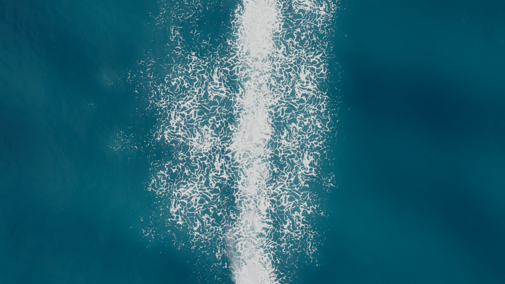
- Erosion foam: a generated foam texture (bubble cells, lace, torn strands, scattered bubbles) stores how long foam survives at each point. The simulated foam amount decides how much of it shows: dense white water right behind the boat, then lace, then scattered bubbles as the wake ages. The texture is sampled at two scales so it does not tile, and the bubble relief shades the foam.
- See-through water: what lies under the surface shows through, tinted by the water colour and depth (water absorbs red first, so things under water turn blue-green). In open water a deep floor 40 m down carries the colour of deep water. Underwater Visibility sets how much shows through. On a coast the shallow sea bed is also shaded into the water, with caustics.
- Esc is instant: while you drive, every simulated frame is written to the cache by a separate process. Stopping no longer re-simulates the take. The streamed cache is byte-identical to a bake.
Foam streaks and aerated water
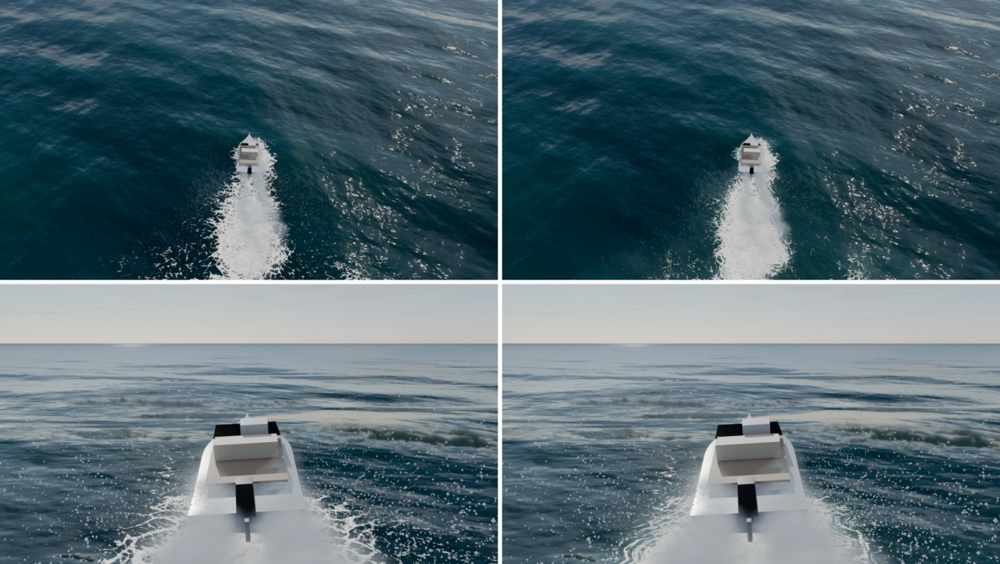
- Streaks: the effects remember the direction the hull travelled where each patch of foam was laid. As foam ages it is drawn out along the trail into streaks (Foam Streaks); fresh foam behind the transom stays round, opaque and bubbly.
- Aerated water: the bubble cloud under and around the foam is milky turquoise and opaque (Aerated Water); it hides what is below, as real white water does.
- Thin foam is translucent: thin films at the edge of an old lace let the water through; thick foam and the core stay solid.
- Patches: foam density varies in patches across the trail instead of a uniform printed lace.
Underwater colour, softer foam, ocean whitewater
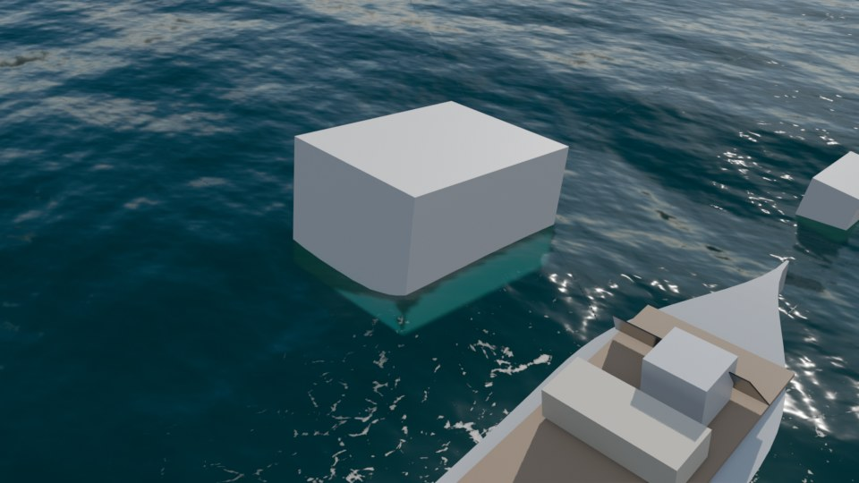
- Under the surface things turn turquoise with depth: the materials of the vessel, the floating objects, the colliders and the sea bed get a small MDP Underwater node (added automatically, in front of their output). Below the local water surface it mixes the surface with the colour of the water by depth (1 - exp(-depth / Tint Depth)), darker deeper down, so the colour changes gradually from the waterline down. The water surface at each object is a plane (height and slope) the simulation writes every frame and keys with the take, so the colour boundary follows the waves. Objects without a material get a plain one. Underwater Tint 0 turns it off.
- Foam: a little water shows through even thick foam (opacity up to ~0.85, thin old foam ~0.3); foam is matte (no sun glitter on it or on the edges of the lace), dimmer (albedo ~0.8 of the foam colour) with softer lace edges in the distance. Spray drops are rougher, dimmer and partly see-through, so they no longer sparkle like sequins.
- Ocean whitewater: light whitewater in patches where the crests of the bigger waves break, across the whole sea (Ocean Whitewater, 0 = off). It scales with the wave height.
Realistic foam and spray
White water now forms where it forms on real boats:
- where the bow wave breaks: the forward part of the hull, more the faster the hull runs for its length;
- off a planing bottom's spray root;
- in the churned water right behind the stern, as white at a ship's scale as at a speedboat's.
Then it breaks up. Thin and old foam is a lace with turquoise aerated water between the bubbles, not a sheet, and only fresh, thick foam is solid white. Foam keeps the wet sheen of real foam instead of looking like snow. Trails are streaked along the course without cross-hatching.
The vessel's own big waves are drawn at their real height (a workboat at hull speed no longer sits between walls of water); small wakes are still shown amplified. Spray drops are millimetre-sized (7 mm by default), so spray reads as glittering drops and fine mist, not white flakes.
To tune the look: Wake & Foam has Foam Life (5 s), Trail Life, Bow / Hull Foam, Prop Wash, Breaking Crests and Drop Size. Water Look has Foam Streaks and Aerated Water.
Waves: FFT or Gerstner
Ocean > Waves picks the sea. FFT, the default, is a full wave spectrum: thousands of waves in three cascades (JONSWAP wind sea plus swell). The hull, the floating objects, the spray and the foam feel the same surface you see. Over the shallows the long waves fade first and the short ones stay. Whitecaps are born where the waves really compress the surface: none on a slight sea, a few on a rough one, more in a storm. Changing a setting rebuilds the sea, about 450 ms on the developer's machine, so a dragged slider stutters. It costs about 190 MB of memory, and those images are not saved in the .blend: they come back from the settings when the file is opened with the add-on enabled. Without the add-on the sea is flat.
Gerstner is a sum of waves, kept in the file, with little memory. The FFT sea is built from seamless loops, 21 to 142 s long depending on the settings; their sum does not repeat within any shot, each cascade does after its own loop.
Under water
Take the camera below sea level and you are under water, in EEVEE and Cycles: the water hides things with distance (Look > View Under Water), the surface seen from below with Snell's window and the sun in it, light beams, the sand, hulls and objects fogged. The switch is at sea level, not at the wave above the camera, so in the troughs and crests right at the surface it can be wrong. There are no bubbles of its own except those of a Post Sim.
Cycles
The water has its own Cycles output with real refraction (IOR 1.33). New scenes get 64 transparent bounces, which keeps the spray's soft puffs from turning into black rocks. In an older file, set Render > Light Paths > Transparent to 64 yourself.
Water types
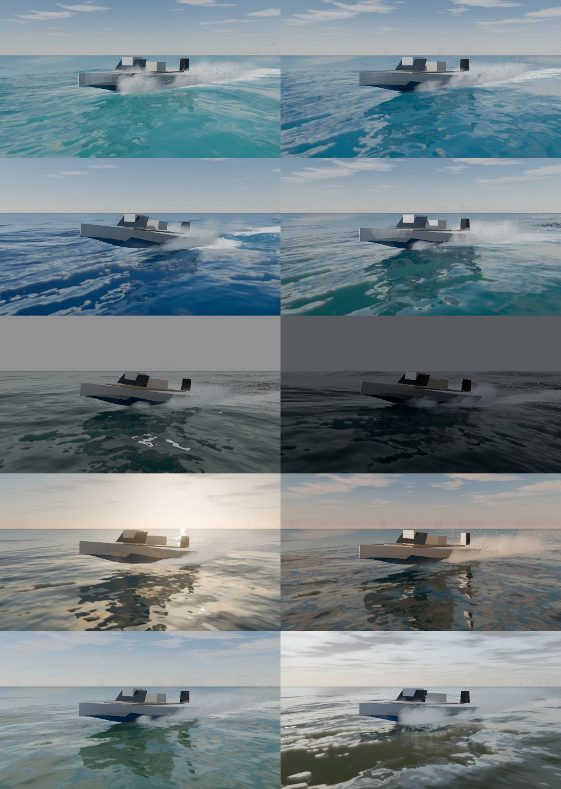
Water Look > Water Type sets the waves, the water colour and clarity, foam colour, the sky and the light in one click (on a coast also the shallow-water colour). Top to bottom, left to right in the image: Tropical Lagoon, Caribbean Blue, Mediterranean, Open Ocean, North Atlantic, Storm, Arctic, Golden Calm, Mountain Lake (fresh water) and Harbour (murky). Every value stays editable afterwards.
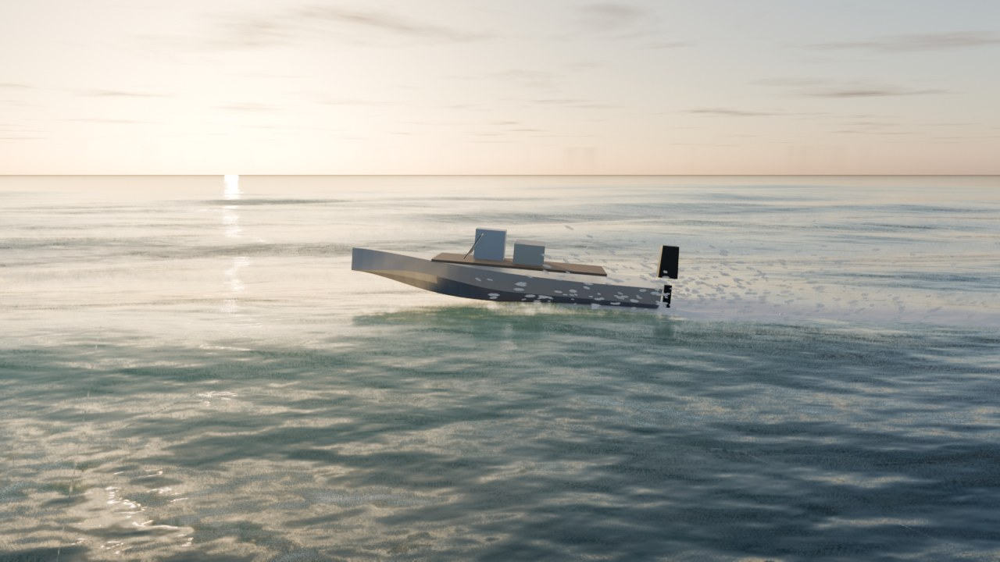
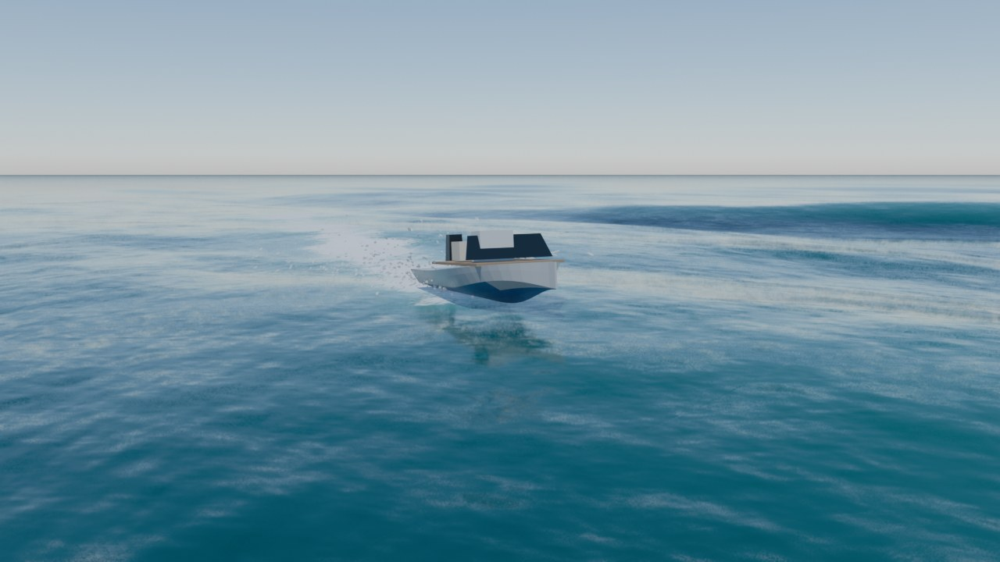
7. Coast (beach preset)
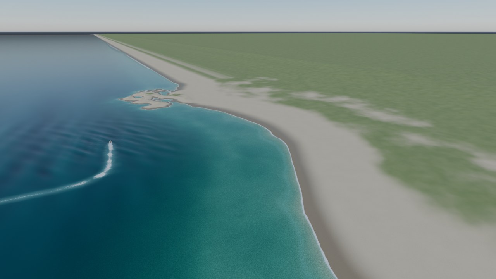
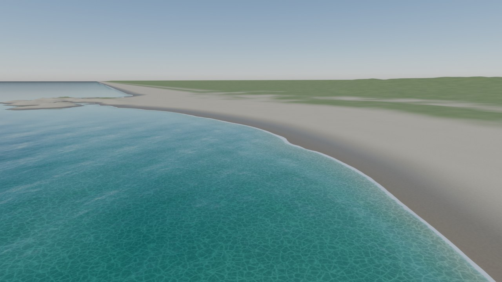
Ocean > Create Coast Scene builds a ready-to-drive beach: a curved sandy bay with a sand bar, a rocky point, dunes and hills, a moderate sea with a swell running onto the beach, the Coast look and a vessel (pick it in the redo panel). Coast > Add Coast adds the same terrain to an existing ocean scene (the Seed changes the shape).
One heightmap (1 km x 1 km, 1024², packed in the .blend as MDP Coast Height) drives everything, so what you see and what the hull touches agree:
- Terrain: a mesh built from the heightmap, continued to the horizon. Its sand material has dry, wet and underwater sand, grass, rock and ripple marks.
- Water colour: the water shader reads the depth under each point of the surface. Shallow water shows the sand through the water (light absorbed per metre by Shallow Colour, fading out over Water Clarity), with moving caustics. Deep water keeps the open-ocean look.
- Surf: Surf Foam and Surf Width add moving foam bands and a white edge line along the shore.
- Waves: waves flatten in water shallower than Shoaling Depth (down to 25 % at the waterline) in both the visuals and the physics.
- Land: where the ground is higher than Land Height, the ocean surface is lowered under the terrain. The water stops at the beach, and the mesh topology never changes.
- Grounding: the hull collides with the sea bed and the beach (spring-damper contact with friction). A boat driven onto the beach slides up the sand and stops upright.
Everything is live in the Coast panel. Baking, playback and rendering work exactly as on the open ocean.
Shore waves
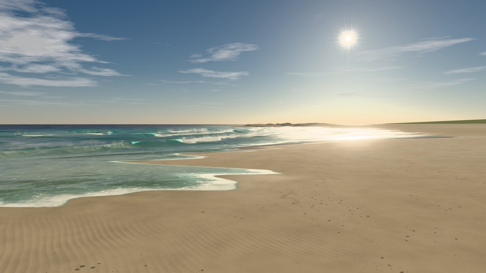
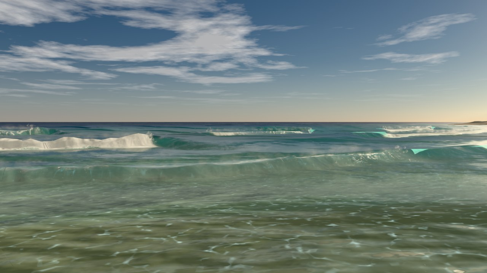
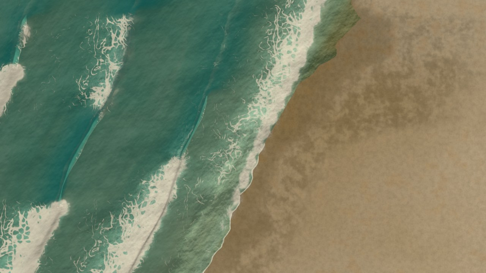
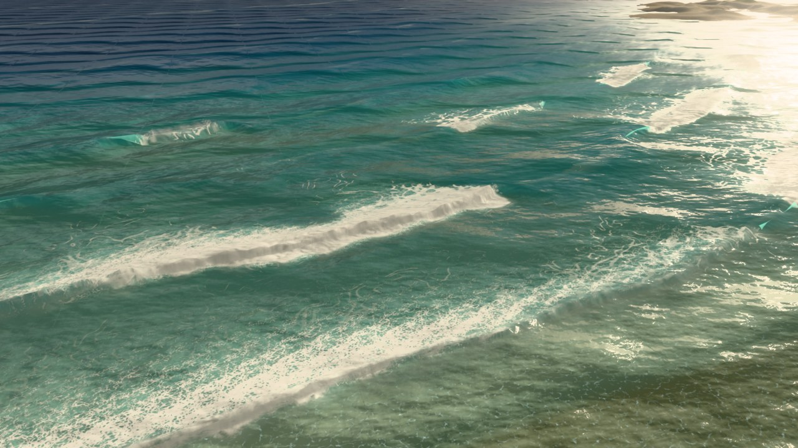
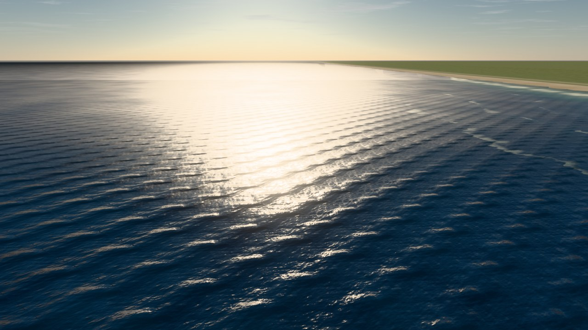
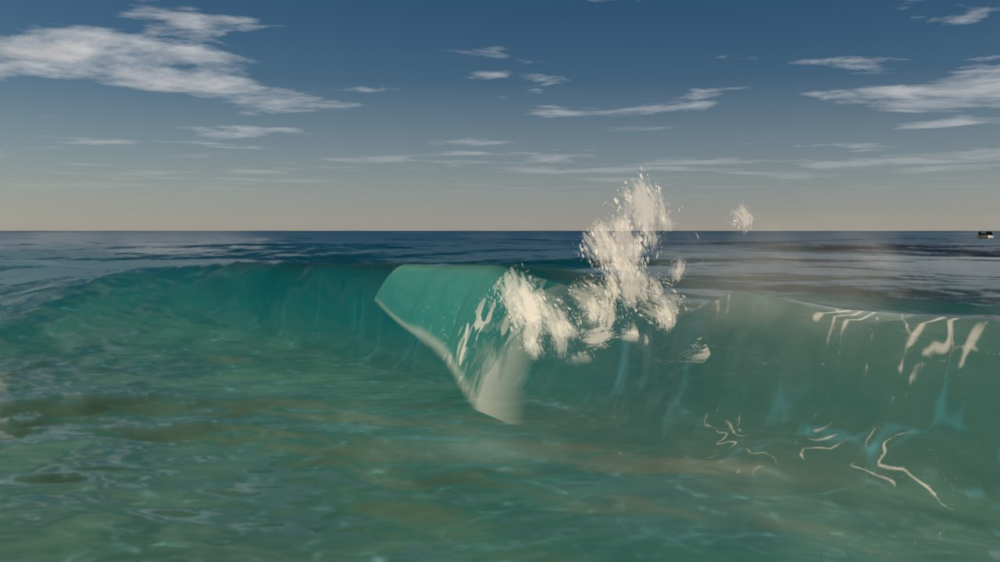
Coast > Shore Waves (on in Create Coast Scene) turns the swell into real surf:
- Breakers: the waves steepen in the shallows, their front turns into a clear, glassy wall that glows turquoise where it is thin, the lip lands and the wave rolls on as a white bore. Each wave has its own height (sets, peaks along the crest), so a wave peels instead of closing out all at once; a bar with rip channels makes peaks and gaps along the beach.
- Refraction: the crests bend round the headland and line up with the depth contours, from a travel-time field the add-on solves once over the coast (a few seconds; packed in the .blend as MDP Shore Field, rebuilt when the swell direction changes).
- Swash: each wave runs up the beach as a thin sheet with a lobed edge and drains back; the edge is cut per pixel, on the sand's own height.
- Foam and wet sand (the Foam and Wet Sand Area, a square round the beach): the foam is made where the waves break and on the swash front, carried by the water and thinned as it spreads; the sand stays wet and glossy where the swash has been and dries over Sand Drying; the backwash leaves foam on the sand that pops; the sunlight is focused by the waves onto the sand under the water (caustics).
- Vessels feel them: the vessel and the floating objects float on the shore waves and are pushed by the bores.
- Sand: pale coral sand with wind ripples (10 cm) on the dry beach, wave ripples and megaripples under the water, a damp band, a wrack line above the reach of the swash.
Settings: Breaker Height and Period (0 = from the swell and the wind sea), Variation (how different the waves are), Break Index (wave height / depth at breaking: lower breaks farther out), Curl (how much the face curls), Run-up.
The Coast look (1.8.1) follows Tidewater's beach: a low, warm sun (14°) along the beach of the coast scene, so the surf and the sand are side- and back-lit and, looking along the beach, the sun and its glitter path are in the picture; bloom on; the Khronos PBR Neutral view (AgX turned the bright sand, the surf and the sky to grey-white). The sun disc is drawn by the add-on's sky (EEVEE does not draw the sky texture's own disc; in Cycles that disc also lit the scene a second time next to the sun lamp).
Cost. Shore waves are the heaviest part of the add-on. Measured on the developer's machine in 1.13.2 (section 10): 7 viewport redraws per second and the simulation at 0.45 of real time; with Shore Waves off, 16 redraws per second and 0.97 of real time. Drive the take, bake it and render it: renders are not slowed down by the live simulation.
8. Floating objects and collisions
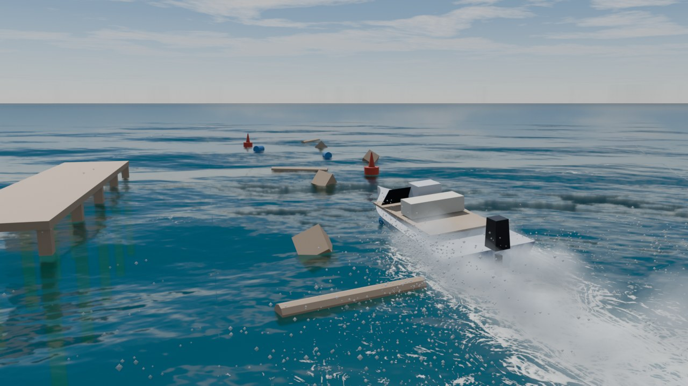
Any mesh can float and collide:
- Select one or more meshes (not part of the vessel) and press Make Floating. The object gets a physics proxy built from its mesh (with its scale): convex hull, contact points and buoyancy probes. Its mass comes from Density x proxy volume, or from Mass if you set one. The panel shows volume and mass and warns when the object is denser than water (it sinks).
- Fixed obstacles (rocks, piers, moored buoys): Make Collider. A pier built from posts and a deck should use Shape: Convex Parts (one hull per loose part), so boats and objects pass between the posts.
- Drive or Bake as usual. Floating objects bob and drift with the waves and ride the vessel's wake. They collide with the vessel, with each other, with colliders and with the coast ground. The boat feels them too: it slows when it hits a heavy log, a crate on the deck pushes it deeper.
- The take records their motion as keyframes (location + rotation). Bake re-simulates it bit-identically to what you drove.
Settings:
- Ballast Offset: moves the centre of mass (object axes). Down makes a tall buoy stand upright.
- Water Drag / Turn Drag: how fast the water stops it. Friction, Bounce: contacts (bounce only above 1 m/s).
- Make Waves: floating objects push the water in the wake grid (rings when they bob or are hit, small wakes when dragged). Ride the Wake: they feel the vessel's bow wave and wake. Splash: foam and spray where they cut the surface.
- Add Floating Objects places demo crates, barrels, buoys and logs in front of the vessel and an optional pier to the side.
How it works (short): buoyancy probes per object; the water is sampled on a small grid over each object (2x2 to 4x4 points) and interpolated, so many probes cost little. Floating objects step at about 60 Hz, the vessel at its own physics rate; the vessel's contacts are checked at every one of its sub-steps. Contacts are found by testing the surface points of one shape against the faces of the other, and solved together with friction (exactly for small contact groups, iteratively for big ones).
Floating objects make waves, but they never feel their own waves: those are simulated in a separate wave field that is only drawn (bounded to ±0.5 m), while the objects ride the vessel's wake.
Limits: shapes are convex hulls (use Convex Parts for concave objects built from pieces); a single concave mesh such as a bowl is treated as its hull. Very thin objects hit at high speed can pass through each other. Colliders do not move. Floating objects outside the wake grid around the vessel do not make waves. Parented objects are ignored (Make Floating clears the parent).
9. Render
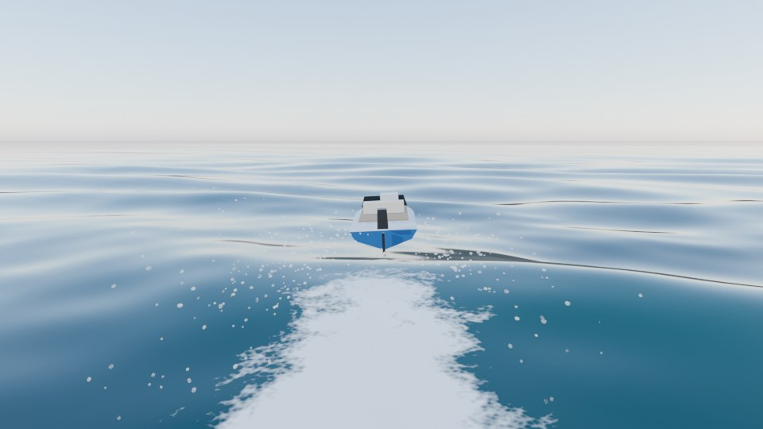
The ocean, wake, foam and spray are real geometry and materials, so EEVEE and Cycles both show them. Bake before rendering, because unbaked live effects are viewport-only and are hidden when you scrub away from the live frame. For best results:
- EEVEE: 32 or more samples. Optional: raytraced reflections.
- Cycles: GPU, 64 or more samples.
- Cameras: the chase camera is keyframed by Bake. Any other camera works too.
10. Performance
Measured in 1.13.2 on one machine: RTX 4060 8 GB, Ryzen 9 7950X, 32 GB RAM, a 3440 x 1400 Blender window with the sidebar open, Material Preview, the speedboat, moderate sea. Your machine and scene will give other numbers. Redraws are viewport frames per second; simulation is how fast the sea and the vessel run against real time (1.0 = real time).
| Scene | Fast View While Driving | Redraws per second | Simulation |
|---|---|---|---|
| Open sea | on (default) | 27 to 28 | 0.98 to 1.0 |
| Open sea | off (the full look) | 12 | not measured |
| Coast with shore waves | on | 7 | 0.45 |
| Coast, Shore Waves off | on | 16 | 0.97 |
| Step | Time |
|---|---|
| First Add Library Vessel in a scene | 1.1 s |
| Stop after a 20 s drive | 0.02 s |
| Drive again from where you stopped | 0.01 s |
| First Drive on a coast (shore simulation warm-up) | 4.4 s |
| Create Coast Scene | 3.6 s |
The first Drive after starting Blender can freeze for up to about 6 s while the shaders of the fast view compile (seen once in 8 runs in new profiles). Long ships cost more in the wake and foam step than small boats: their hull covers many more wake cells. These were not measured again on this version.
Fast View While Driving leaves out EEVEE's shadows, ray tracing and see-through water during the drive only. They come back when you stop, and renders are not affected. So the look you see while driving is simpler than the look you render.
Tips: use Low quality or Solid shading while driving, and render with Medium or High. On a slow machine, drive first, then bake and render.
11. Scripting
from bl_ext.user_default.ocean_physics_pro import api
info = api.water_at(bpy.context.scene, x, y) # z, normal, water particle velocity12. What it is, and what it is not
- Raycast node: the shader Raycast node (5.x) works in Cycles but returns no hits in EEVEE (tested: Is Hit 0 everywhere). The see-through water uses EEVEE's ray-traced refraction instead.
- Ocean: FFT cascades (JONSWAP wind sea plus swell, precomputed as seamless loops) or a sum of Gerstner waves, on a nested LOD ring mesh, shared exactly with the physics. Shorter waves come from an FFT micro-wave atlas and are shading only. The underwater view switches at sea level. The shallow sea bed and its caustics are shaded inside the water material (no refraction offset).
- Vessel physics: an independent 6-DOF force/torque solver (Blender's rigid body API offers no per-step force callback). It uses volume probes for buoyancy and hull surface patches for pressure drag, planing lift, suction, skin friction, keel grip and slamming. Hump Model is an approximation of the vessel's own transverse wave. Arcade assists are optional torques and are off in every preset.
- Wake: a linear deep-water wave solver on a local grid (dispersive, so it forms Kelvin wakes), blended into the open ocean. It is not a full fluid simulation: there is no overturning water or 3D splash volume.
- Foam: 2D fields on the surface (near grid + long trail grid), advected by the current, spreading and decaying.
- Spray: ballistic particles in a fixed pool (16k on Medium). Drops are drawn as a GPU point cloud with a trailing point for the motion streak; mist is soft puffs (smooth low-poly spheres whose edge fades out, so they are round from any view) carried by the wind. Drops that land feed the foam. Sources: bow and chine sheets, rooster tail, breaking wake crests, slamming.
- One vessel is simulated at a time (the active vessel), plus any number of floating objects and colliders.
- Floating objects: an own rigid-body solver (Blender's rigid body world cannot apply buoyancy each step). Convex-hull shapes, buoyancy probes, form drag and wave damping; contacts with friction and restitution. It is not a fluid simulation: objects do not fill with water or break apart.
13. Troubleshooting
- Boat sinks or floats too high: set it up again with Setup Selected and Realistic Mass on (Hull Body proxy: masts, cabins and outboard legs do not float). With your own mass, check the Vessel panel buoyancy line.
- It goes astern / the bow is the wrong end: the bow was uncertain (both ends alike; the setup dialog says so). Run Setup Selected again with Bow Direction set to the axis the bow points to.
- A big ship barely moves: it is accelerating like the real one (minutes to full speed). Set Bake > Start Speed to start under way.
- Library vessel behaves differently after I changed values: Vessel > Reset restores the library values.
- Boat dips the bow at rest: lower LCG Shift (more aft) or move CoG Offset X.
- Water visible inside an open boat: raise Hull Displacement (Wake & Foam). The wake field pushes the surface below the keel.
- No effects in the render: Bake first. Check Cache Folder (it is relative to the .blend).
- Slow viewport: Performance > Low, Solid shading, smaller window.
- Coast: water runs too far up the beach in a big sea: raise Land Height or Shoaling Depth (Coast panel).
- A floating object sinks: its density is above 1025 kg/m3 (the panel says "sinks"). Lower Density or set Mass.
- A floating object ignores my mesh edits: press Rebuild Proxy (the proxy is rebuilt by itself only when the scale, shape mode or probe count changes, or the vertex count changes).
- A buoy lies on its side: set Ballast Offset Z negative (centre of mass low).
14. Version history
New in 1.13.4:
- The Yacht Ship floats on its real waterline, where the red bottom paint ends. It sat about 2 m too deep, with the sea at its lower deck.
New in 1.13.3:
- The licence text ships with the add-on, and the parts of the library vessels have readable names (Speedboat, Speedboat Texture 1, and so on).
New in 1.13.2, speed:
- The first ship or demo ocean no longer freezes Blender for 20 seconds: the big node trees come ready-made with the add-on.
- Driving draws about 3 times faster. Performance > Fast View While Driving (on by default) leaves out EEVEE's shadows, ray tracing and see-through water during the drive only; they come back when you stop, and renders are not affected. While you drive, the sidebar shows only the main panel.
- A viewport rendering with Cycles shows Material Preview while you drive.
- Pressing Drive again goes on at once from where you stopped.
- Marine Dynamics Pro, the old name of this add-on, is turned off automatically when both are enabled: the two together froze Blender at every step.
New in 1.13.1:
- The HUD no longer overlaps the viewport's own text or the toolbar.
- Performance > HUD Timings turns off the frame rate and the milliseconds in the HUD and the sidebar.
New in 1.13:
- The add-on is now Ocean Physics Pro (it was Marine Dynamics Pro), and its sidebar tab is Ocean. Remove the old add-on before you install this one: both use the same operators. Files made with the old name open as before.
New in 1.12.1:
- A new scene switches the 3D views' Material Preview to the scene's sky and sun (Scene World, Scene Lights); under Blender's studio light the water showed neither.
- The Cache Folder field no longer shows red: its
//relative path is valid.
New in 1.12:
- Post Sim (Bake panel): after you have recorded a drive, press it for the final render. The vessel stays on the recorded path to the frame (checked: 0 difference); the wake and foam grids run finer (x2 or x4, about 4x or 16x the cache) and particle whitewater is added: foam riding the surface and its flow, bubbles under it that rise and turn into foam, drops thrown out of it. The take's cache is overwritten; Bake brings the normal one back. It renders in EEVEE and Cycles; in EEVEE the particles are tiny quads, in Cycles spheres.
- Under water: take the camera below sea level and you are under water, in EEVEE and Cycles: the water hides things with distance (Look > View Under Water), the surface seen from below with Snell's window and the sun in it, light beams, the sand, hulls and objects fogged. The switch is at sea level, not at the wave above the camera: in the troughs and crests right at the surface it can be wrong. No bubbles of its own except those of a Post Sim.
- Cycles: the water has its own Cycles output with real refraction (IOR 1.33); new scenes get settings that keep the spray's soft puffs from turning into black rocks (64 transparent bounces). An older file: set Render > Light Paths > Transparent to 64 yourself.
- The far sea has no lattice any more: the normal maps held waves of about the size of their tile, repeating wave for wave (1.11 made it worse by carrying one of them to 1.5 km). Now no tile holds waves over a sixth of its size, and beyond 200 m two drifting copies of a still tile take over.
- Faster to draw: the procedural noise and Voronoi of the sand and the water became textures: a 128 sample EEVEE frame of the beach went from 8.3 to 5.5 s, the look kept. The far coast no longer shows white triangles.
New in 1.11, the FFT ocean (Ocean > Waves, the default):
- A full wave spectrum instead of a sum of 27 waves: thousands of waves in three cascades (JONSWAP wind sea plus swell, as in Tidewater). The hull, the floating objects, the spray and the foam feel the same surface you see.
- Sea State, Wave Height, Wavelength, Swell, Spread, Steepness, Short Chop, Seed mean what they did; Wave Count and Chop Count are Gerstner only. Changing a setting rebuilds the sea, about 450 ms here, so a dragged slider stutters.
- Over the shallows the long waves fade first and the short ones stay, each cascade at its own depth (Shoaling Depth scales them).
- Whitecaps are born where the waves really compress the surface and leave a fading trail: none on a slight sea, a few on a rough one, more in a storm. The look's old noise patches on the crests are off in FFT mode.
- The far sea no longer mirrors the clouds: the waves too small to see tilt its reflection to the higher, deeper blue sky, and sunlight spreads into a glitter path. The dark furry blotches on wave faces at a low camera are gone.
- It costs about 190 MB of memory, and those images are not saved in the .blend (they come back from the settings when the file is opened with the add-on enabled; without the add-on the sea is flat). Waves: Gerstner keeps the old sea, kept in the file, with little memory. Files saved before 1.11 stay on Gerstner.
- The sea is built from seamless loops, 21 to 142 s long depending on the settings; their sum does not repeat within any shot, each cascade does after its own loop.
New in 1.10, the rest of Tidewater's sea and sand:
- Water with Tidewater's optics: clear far down, deep blue offshore, turquoise over the sand; stronger small chop.
- The thrown lip: a separate sheet of water leaving the crest and falling in front of the face, glassy and turquoise when backlit, its edge tearing into white fingers; it is gone just before it lands, the splash and the roller take over.
- Caustics from photons actually refracted through a wave surface (a shipped pattern, two copies crossing), not a Voronoi net.
- Whitewater lit by its own lumps: sunlit caps, shaded crevices.
- Sand: backwash rills, thin swash marks at the limits of earlier uprushes, stranded foam in the same lace as on the water.
- Lens FX: Bloom + Lens Flare (the Coast look): ghosts and rays from the sun when it is in the frame, not from glints on the water. Renders; the viewport shows them with Lens FX in Viewport.
New in 1.9:
- Detail Centre: View (Ocean panel; set by Create Coast Scene): the fine rings of the ocean mesh follow where you look in the viewport, and where the scene camera looks in renders. With the detail on the vessel offshore, the breakers lay on the coarse rings.
- Surf foam after Tidewater: a pattern in world space, carried by the water, that never stretches with the waves; whitewater per pixel from the foam field, whatever the mesh; a dense mat tearing into lace as it thins; from high up the same web at a larger scale. The foam area ends softly and is larger (320 m).
- Breaker Spray (Shore Waves, 0 = none): drops, torn sheets and mist thrown where the lip lands and off the roller, as soft sprites that face you from any view; baked with the take.
Also in 1.8.1:
- Sand after Tidewater's beach shading: pale coral sand with warmer drifts, shell grit and pebbles (most in the high-water band), dried seaweed there, a damp mottled band below the berm, wet sand darker, more saturated and glossy, wind ripples in patches on the dry sand. Fine detail fades out where it would be smaller than a pixel (no coarse stripes far away).
- Swash edge: the lobes of the edge are drawn per pixel (on the ~1 m ocean mesh they made teeth with straight edges), and the film of the swash reflects the sky like the rest of the water.
- Whitewater: solid in the core of a roller, torn into lace at its edges; lit with sunlit caps and sky-shaded sides; light through thin foam makes it glow when you look towards the sun. Far away the foam shows its coverage instead of flat patches with hard outlines.